Zustandsbehaftete Programmierung in funktionalen Sprachen
Programmierparadigmen
Zustandsbehaftete Programmierung
Beispiel: Ein Bankkonto
- Typisches (oder doch nicht?) Beispiel für einen zustandsbehafteten Gegenstand der realen Welt: ein Bankkonto.
- Das Konto werde durch eine Prozedur
belasterepräsentiert. (belaste betrag)reduziere den Kontostand umbetragund gebe den neuen Kontostand als Resultat zurück.Annahme: Kontostand zu Beginn 100. Dann ist folgende Ausdruckssequenz denkbar:
> (belaste 30) 70 > (belaste 30) 40 > (belaste 50) konto-ueberzogen > (belaste 20) 20
Zustandsabhängige Resultate
- Beachte: Die gleiche Anwendung
(belaste 30)liefert unterschiedliche Ergebnisse! belasteverhält sich nicht mehr wie eine mathematische Funktion!Mögliche Implementierung des Bankkontos:
;; globlale Variable (def *konto* (atom 100)) ;; belaste: (number -> (mixed number symbol)) ;; Effekt: bucht vom konto betrag ab, liefert neuen ;; Kontostand als Resultat, falls Konto nicht ueberzogen (def belaste (fn [betrag] (cond (>= @*konto* betrag) (do (swap! *konto* - betrag) @*konto*) :else 'konto-ueberzogen))
Semantik von atom, swap! und do
atom- Durch einen Ausdruck der Form
(def v (atom e))wird ein Atom (eine änderbare Speicherzelle) mit dem Anfangswerteerzeugt und ein Verweis auf sie invabgelegt. Auf den Wert vonvkann dann mit(deref v)oder@vzugegriffen werden. swap!- Ein Ausdruck der Form
(swap! atom f ...)
wird als(f @atom ...)ausgewertet. Das Resultat der Auswertung wird der neue Wert des Atoms. do- Ausdrücke der Form
(do\(e_{ 1}\ e_{2} \ldots e_{n}\))werden wie folgt ausgewertet:- Die Ausdrücke \(e_{i}\) werden in der angegebenen Reihenfolge ausgewertet.
- Der Wert von \(e_{n}\) ist der Wert des
do-Ausdrucks.
Vermeidung der globalen Variablen *konto*
Definition einer lokalen Variablen
konto:(def belaste (let [konto (atom 100)] (fn [betrag] (cond (>= @konto betrag) (do (swap! konto - betrag) @konto) :else 'konto-ueberzogen))))
- Damit arbeitet
belastewie vorher. - Beachte: Die Auswertung des
let-Ausdrucks erfolgt nur einmal bei der Definition der Funktionbelaste. - Warum ist das wichtig?
- Die neue Funktion
belastestellt einen ersten Ansatz dar, Daten und Prozeduren zusammen zu bringen.
Erzeugung mehrerer Konten
;; nimmt einen Betrag als Startkapital eines Kontos ;; und erzeugt eine "belaste-Funktion" ;; erzeuge-konto: (number -> (number -> (mixed number symbol))) (def erzeuge-konto (fn [startwert] (let [konto (atom startwert)] (fn [betrag] (cond (>= @konto betrag) (do (swap! konto - betrag) @konto) :else 'konto-ueberzogen)))))
Benutzung mehrerer Konten
(def konto1 (erzeuge-konto 500)) (def konto2 (erzeuge-konto 600)) (konto1 200) ;==> 300 (konto2 400) ;==> 200 (konto2 400) ;==> konto-ueberzogen (konto2 100) ;==> 100
Auswertungsmodell für Prozeduren - Grundlagen
Ersetzungsmodell und Zuweisungen
Zur Wiederholung das Ersetzungsmodell für Funktionsanwendungen:
Ein Term der Form:
\[(operator\ operand_{1}\ \ldots operand_{n})\]
wird wie folgt ausgewertet:
- Auswertung der Operanden des Terms
- Auswertung des Operators des Terms. Der Wert muss eine Funktion sein.
Zwei Fälle sind möglich:
- Der Wert des Operators ist eine eingebaute Funktion (z.B. + oder *), dann ist der Wert der Anwendung der eingebauten Funktion auf die ausgewerteten Operanden der Wert des Terms.
- Anderfalls muss der Operator zu einem fn-Ausdruck ausgewertet werden: Anwendung der Funktion auf die Operanden ist die Auswertung des Funktionsrumpfes, wobei jeder formale Parameter durch den korrespondierenden ausgewerteten Operanden ersetzt wird.
Versagen des Ersetzungsmodells (1)
- Für das Ersetzungsmodell gilt:
- Gleiches kann immer durch Gleiches ersetzt werden.
- Bezeichner (Variablen) sind nur Namen für Werte.
Gegenbeispiel:
(def k1 (erzeuge-konto 100)) (def k2 (erzeuge-konto 100))
k1undk2sind verschiedene Bezeichner für den gleichen Wert. Die folgenden Ausdrücke liefern aber unterschiedliche Werte:
(k1 10) ==> 90 (k1 10) ==> 80 (k2 10) ==> 90
Was passiert hier?
(def k1 (erzeuge-konto 100)) (def k2 k1) (k1 10) (k2 10) ==> ???
Versagen des Ersetzungsmodells (2)
Nach dem Ersetzungsmodell würde aus
((erzeuge-konto 500) 150) = (((fn [startwert] (let [konto (atom startwert)] (fn [betrag] (cond (>= @konto betrag) (do (swap! konto - betrag) @konto) :else 'konto-ueberzogen)))) 500) 150) = ((fn [betrag] (cond (>= 500 betrag) (do (swap! konto - betrag) 500) ;;***** hier darf =konto= offensichtlich nicht ersetzt werden! :else 'konto-ueberzogen)) 150)
Versagen des Ersetzungsmodells (3)
Fortsetzung der Auswertung:
= ((fn [betrag] (cond (>= 500 betrag) (do (swap! konto - betrag) 500) :else 'konto-ueberzogen)) 150) = (cond (>= 500 150) (do (swap! konto (- 500 150)) 500) :else 'konto-ueberzogen) = (do (swap! konto (- 500 150)) 500) = (do (swap! konto 350) 500) = 500
- Das ist offensichtlich unsinnig!
Das Umgebungsmodell
- Das Umgebungsmodell erlaubt mithilfe von Umgebungsdiagrammen die Semantik zustandsbehafteter Prozeduren zu definieren.
- Durch eine Umgebung wird eine Menge von Bindungen von Variablen an Werte definiert.
- Bereits bekannt: In der globalen Umgebung werden (mit der
Pseudofunktion
def) Werte (auch Funktionen/Prozeduren) an Bezeichner gebunden. - In Umgebungsdiagrammen werden Variablen durch Zellen dargestellt, die auf Werte verweisen.
- Beispiel: Die Definitionen
(def z 27)
(def s "Mozart")
werden durch dieses Umgebungsdiagramm dargestellt.
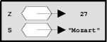
Umgebungen - Rahmen
- Das auf der vorangegangen Folie dargestellte Umgebungsdiagramm enthält einen Rahmen. Das ist der einfachste Fall einer Umgebung.
- Die Umgebung auf der vorangegangen Folie stellt einen Ausschnitt aus der globalen Umgebung dar. Die Definitionen der Standard-Prozeduren von Clojure sind ebenfalls in der globalen Umgebung definiert.
- Eine Umgebung kann andere Umgebungen umschließen.
- In Umgebungsdiagrammen werden verschachtelte Umgebungen durch verkettete Rahmen dargestellt.
- Beispiel: s. nächste Folie
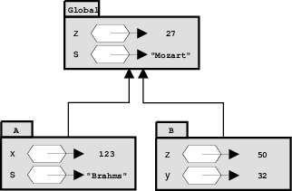
Komplexe Umgebungen
- Die Umgebung Global besteht aus einem einzigen Rahmen.
- Die Umgebung A besteht aus den Rahmen A und Global.
- Die Umgebung B besteht aus den Rahmen B und Global.
Die Variable
zist- in der Umgebung A an 27,
- in der Umgebung B an 50 und
- in der Umgebung Global an 27
gebunden.
- Die Umgebung A enthält folgende Bindungen:
xan 123san "Brahms"zan 27
- Mit
swap!kann die Bindung einer Variablen (einesatom) verändert werden.
Prozeduren in Umgebungsdiagrammen
Die Prozedurdefinition
(def quadrat (fn [x] (* x x)))
führt zu folgendem Umgebungsdiagramm:
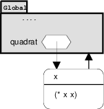
Prozedurdarstellung in Umgebungsdiagrammen
Die Darstellung einer Prozedur besteht aus drei Teilen:
- Liste der formalen Parameter (hier:
x) - Prozedurrumpf (Berechnungsvorschrift, hier:
(* x x))
- Verweis auf die Umgebung, in der der Lambda-Ausdruck ausgewertet wurde.
- Liste der formalen Parameter (hier:
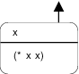
- Eine so dargestellte Prozedur bezeichnet man auch als closure. Die Verwendung dieses Begriffes ist aber umstritten.
- Auswertung eines Lambda-Ausdrucks in Bezug auf eine Umgebung resultiert also in einem Prozedurobjekt (closure) wie oben dargestellt.
Auswertungsmodell für Prozeduren - Beispiele
Auswertung einer Prozeduranwendung
Regel für die Auswertung von Prozeduranwendungen im Umgebungsmodell:
- Erzeuge einen Rahmen mit den Bindungen der formalen Parameter der Prozedur an die Argumente der Prozeduranwendung
- Dieser Rahmen bekommt als umschließende Umgebung die Umgebung, bezüglich der das Prozedurobjekt definiert ist.
- Werte den Prozedurrumpf bezüglich der neu erzeugten Umgebung aus.
Auswertung von (quadrat 17):
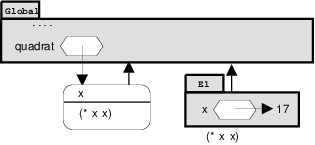
Ein etwas komplexeres Beispiel
Mit den Definitionen
(def quadrat (fn [x] (* x x))) (def summe-der-quadrate (fn [x y] (+ (quadrat x) (quadrat y)))) (def f (fn [a] (summe-der-quadrate (+ a 1) (* a 2))))
soll der Ausdruck (f 3)) ausgewertet werden.
Umgebungsdiagramm der drei Definitionen
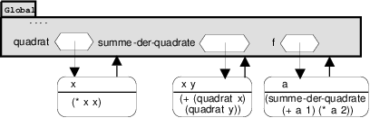
Umgebungen erzeugt durch (f 3)
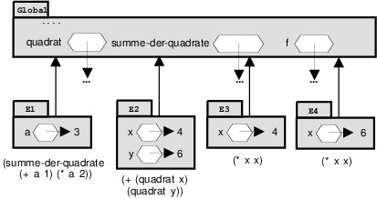
Prozeduren mit lokalem Zustand
- Wir benutzen nun das Umgebungsmodell, um die Auswertung von Prozeduren mit lokalen Zustandsvariablen zu beschreiben.
Wir greifen auf das Konto-Beispiel zurück:
(def erzeuge-konto (fn [startwert] (let [konto (atom startwert)] (fn [betrag] (cond (>= @konto betrag) (do (swap! konto - betrag) @konto) :else 'konto-ueberzogen)))))
… und werten der Reihe nach die Ausdrücke
(def konto1 (erzeuge-konto 100)) (konto1 50)
aus.
Definition von erzeuge-konto …
… in der globalen Umgebung:
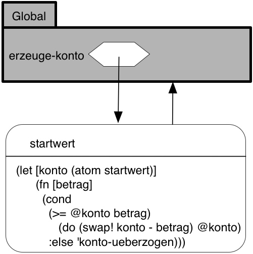
(def konto1 (erzeuge-konto 100)) …
- Für die Auswertung von diese Ausdrucks
sind folgende Schritte erforderlich:
- Für die Auswertung von
(erzeuge-konto 100)ist ein neuer Rahmen (E1) anzulegen, in dem der formale Parameterstartwertan 100 gebunden wird und die lokale Defintion des Atomskontohinterlegt wird. - In Bezug auf E1 ist der Rumpf von
erzeuge-konto– ein fn-Ausdruck – auszuwerten. Es entsteht also ein neues Prozedurobjekt mit- dem formalen Parameter
betrag, - dem Rumpf
(cond ...und - der Umgebung E1
- dem formalen Parameter
- Dieses Prozedurobjekt ist das Resultat der Anwendung von
erzeuge-konto, welches in der globalen Umgebung an den Bezeichnerkonto1gebunden wird.
- Für die Auswertung von
- Das resultierende Umgebungsdiagramm zeigt die nächste Folie.
… das zugehörige Umgebungsdiagramm
(def konto1 (erzeuge-konto 100))
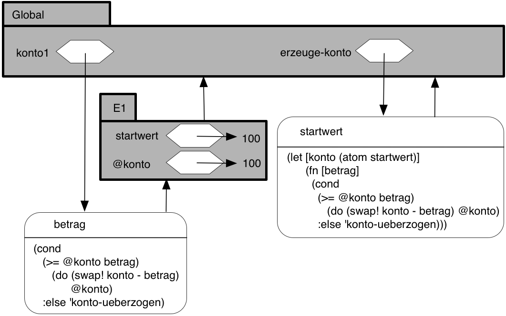
Die Auswertung von (konto1 50) …
- …erfordert die Schritte:
Es ist ein neuer Rahmen (E2) anzulegen, in dem der formale Parameter
betragvonkonto1an 50 gebunden wird.Beachte: Die umschließende Umgebung für E2 ist E1, nicht die globale Umgebung, weil E1 die Umgebung des Prozedurobjekts
konto1ist.Innerhalb von E2 wird der Rumpf des Prozedurobjekts
konto1ausgewertet.Beachte: Dieser Ausdruck referenziert sowohl
betragals auchkonto.betragwird in E2 gefunden.kontowird in der umschließenden Umgebung E1 gefunden.
- Das resultierende Umgebungsdiagramm zeigt die nächste Folie.
Umgebungen erzeugt durch (konto1 50)
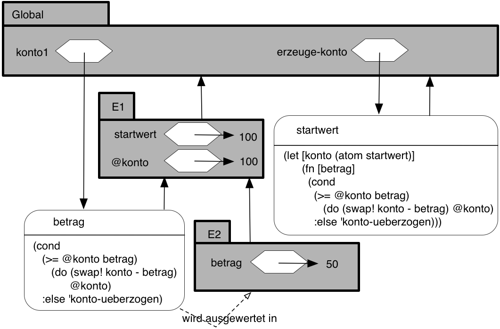
Die Wirkung von (swap! konto ... )
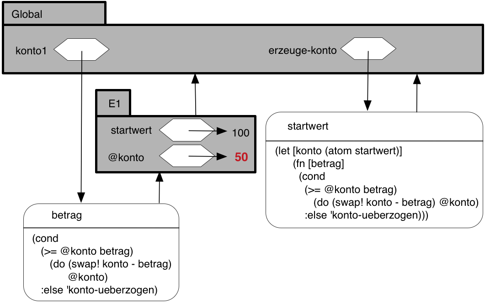
Zusammenfassung
- Durch die Ausführung von
(swap! konto ... )wird die Bindung von@kontoin E1 geändert. - Nach Auswertung des Rumpfes von
konto1entfällt E2, da die Prozeduranwendung, die E2 erzeugt hat, beendet ist. - Wenn
konto1erneut aufgerufen würde, würde eine neue Umgebung E2 angelegt werden, die als umschließende Umgebung wieder E1 hätte. - E1 dient also als Speicher für die lokalne Zustandsvariablen des
Prozedurobjekts
konto1.